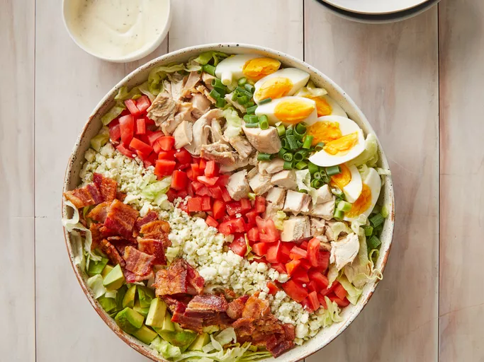

Return to homepage
Cobb Salad

Description
A Cobb salad is an American dish that consists of lettuce topped with bacon, chicken, boiled eggs, tomatoes, and other ingredients arranged in neat rows.
It is traditionally served as a main course. The origins of the classic salad is unclear, but many believe it was created in the late 1930s at the Brown Derby restaurant in Hollywood.
Ingredients
- Meat: This protein-packed Cobb salad calls for both bacon and chicken.
- Eggs: Boiled eggs lend even more protein to the hearty salad.
- Lettuce: Iceberg lettuce is the traditional choice for this classic dish.
- Tomatoes: Chopped fresh tomatoes lend flavor and color.
- Blue cheese: Crumbled blue cheese takes the flavor up a notch.
- Green onions: If you prefer a stronger flavor, use a red onion.
- Avocado: Cubed avocados make this salad even more filling.
- Dressing: Use store-bought ranch dressing or make your own at home.
Directions
- Boil, peel, and chop the eggs.
- Cook, drain, and crumble the bacon.
- Assemble the salad.
- Drizzle with dressing before serving.
All content belongs to AllRecipes.com